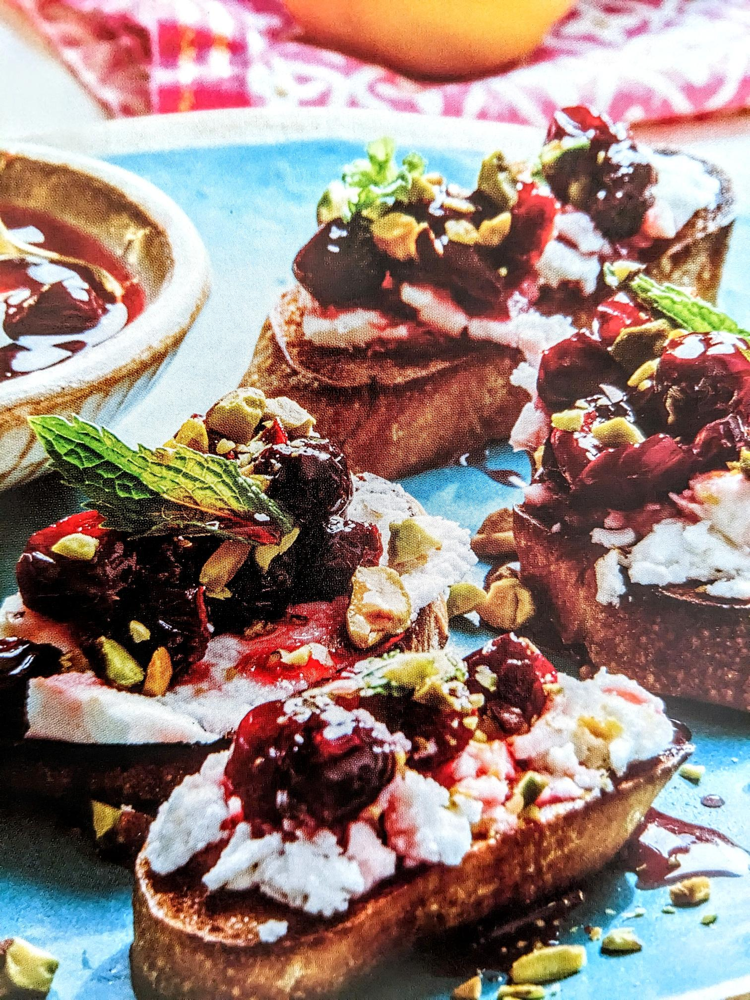

Sour Cherry Preserve

Description
This sour cherry preserve is delicious served with feta cheese on crostini as a wonderful Persian-inspired breakfast.
Ingredients
- 1 pound sour cherries, pitted
- 1 cup sugar
- 1 tablespoon fresh lime juice
- 1 tablespoon rose water (optional)
Steps
- Place the sour cherries in a medium bowl.
- Add the sugar and mix.
- Partially cover and set aside for 3 hours or overnight to macerate.
- Place the macerated cherries in a heavy-bottomed medium pan, and add the lime juice.
- Bring to a quick boil over medium-high heat.
- Reduce the heat to medium low and simmer, stirring often - about 20-25 minutes until cherries soften.
- After this simmering, the mixture will have thickened, so now transfer the cherries to a glass jar.
- Keep reducing the juices for another five minutes, bearing in mind that the preserves will condsiderably thicken as they cool.
- Pour the juices over the cherries and add the rose water.
- Stir and set aside to cool to room temperature.
- Cover and refrigerate.
- Preserves should last up to a month in the fridge.